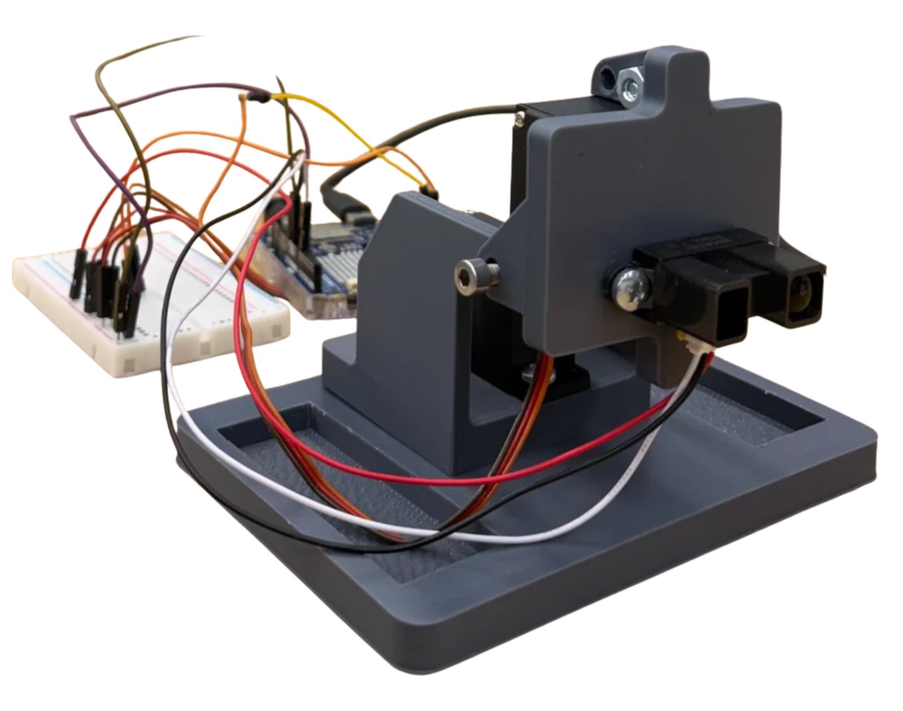
Pan-Tilt 3D Scanner
A two-servo pan-tilt scanner that turns infrared distance readings into 2D and 3D scans.
Overview
For a project in Principles of Integrated Engineering in September 2026, a teammate and I built a 2.5D scanner from two hobby servos and a Sharp IR distance sensor. The sensor pairs an LED with a photodiode and outputs an analog voltage that depends on how much light reflects off an object. Two servos pan and tilt it across a cardboard cutout, and the voltage, servo angles, and calibration turn each reading into a point in 3D.
My role
I designed the sensor mount and attachment system and the scanner's rotation mechanism, printed two iterations of our CAD on the 3D printers, and assembled the first version. I crimped pins onto the servos and sensor so they plugged cleanly into the breadboard. On the software side, I wrote the MATLAB code that collects IR data during a scan and processes it into 2D and 3D plots.
Design & build
Calibration
We measured the sensor at 21 known distances from 20 to 60 cm in 2 cm steps, averaging 50 voltage readings
taken 45 ms apart at each one. Sharp IR sensors follow an inverse relationship, so we fit the curve
d = a / (V − b) + c with fminsearch, giving
a = 88.8713, b = −0.2382, and c = −9.9964. Below a minimum distance, the
sensor's voltage falls again and becomes ambiguous, so we dropped readings closer than the voltage peak. We
then checked the fit with three extra points at 65, 68, and 75 cm.
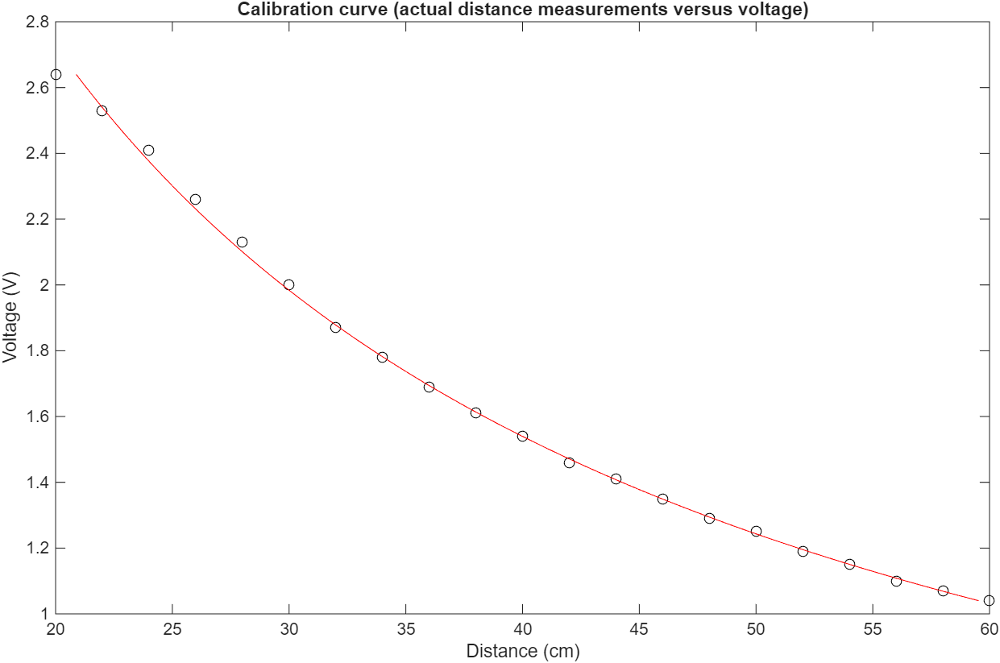
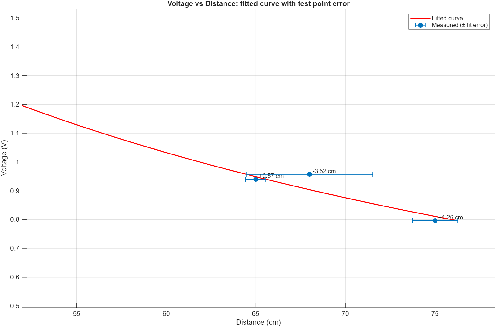
Mechanism
The tilt servo and sensor share an axis, with the servo arm bolted to the main body so the sensor assembly tilts as one piece. The main body has a second servo facing downward, whose arm is held in a separate base, so the whole body pans while the arm stays fixed. All three parts were 3D printed, over three rapid iterations: concept testing and clearances, then slots for the rotating motor and bolt clearance, then a wider base and a tighter fit around the arm. The first base was too light to keep the scanner steady; widening it solved that.
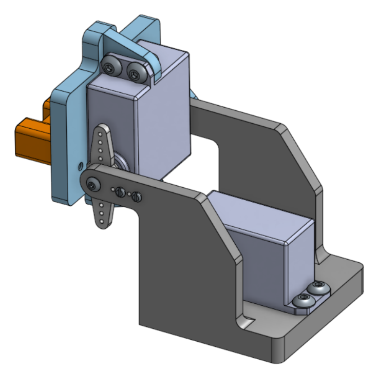
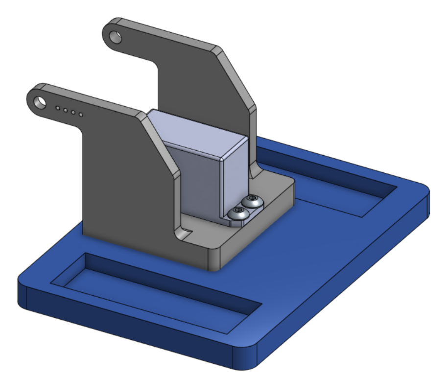
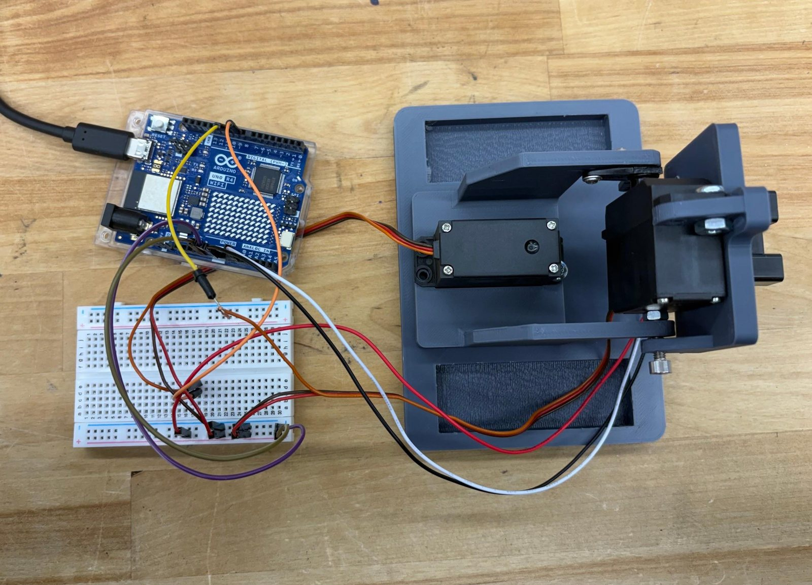
Scanning software
The scan is a nested loop: the outer loop steps the tilt servo from −7° to 40° and the inner loop sweeps the pan servo from −40° to 40°, in 1° steps. The pan sweep reverses direction every row, which makes the scan faster and avoids jerky servo moves, making the data more accurate. After each move the servo settles for 0.04 s before a reading, and any voltage outside the calibrated range is discarded. Each distance is then converted from pan and tilt angles to x, y, z with spherical-to-Cartesian trigonometry and plotted as a 2D heat map and a 3D point cloud, with an optional depth slice to isolate the object.
Results
We scanned our own cutout, a peeling banana, and a heart-eyed emoji provided by the course assistants. Both scans capture the general shape and depth of the objects. They aren't perfect: there are scattered points around each object, likely from other things in view, and distortion near the bottom from the table and holder.
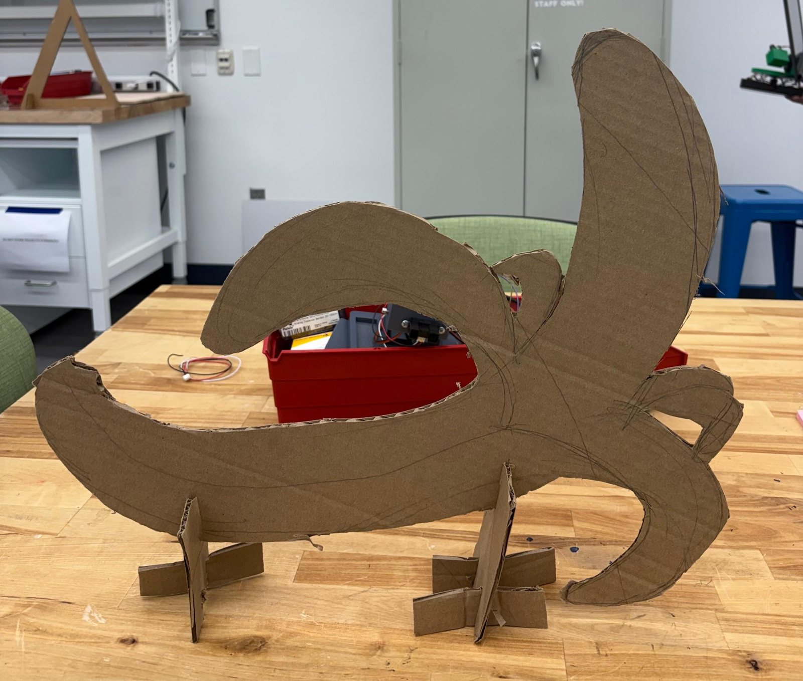
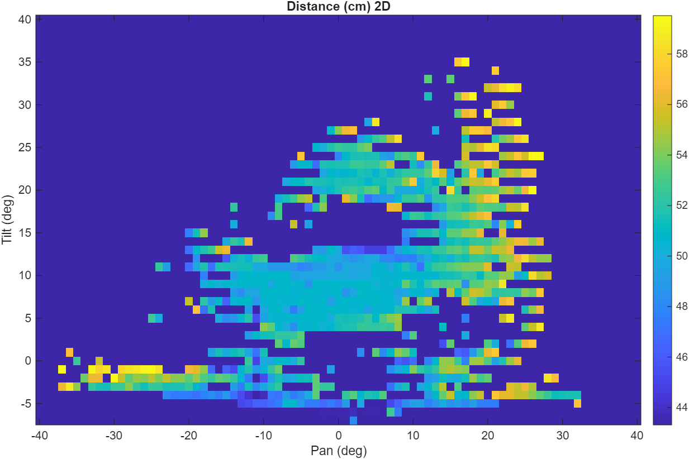
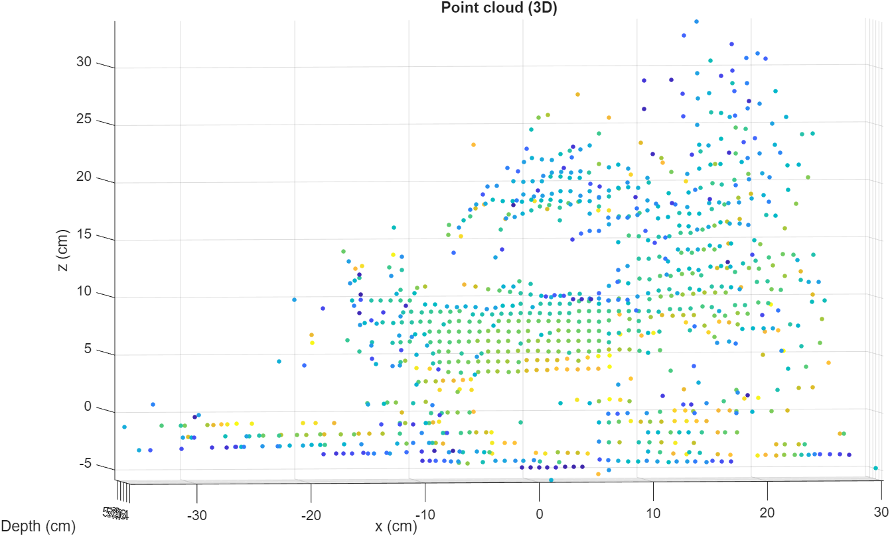
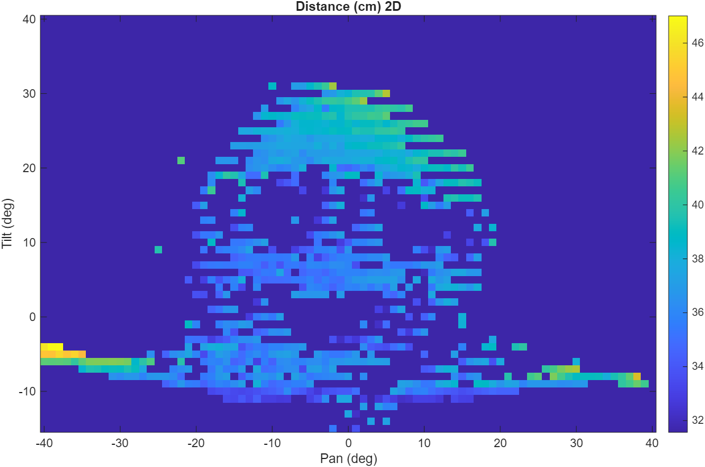
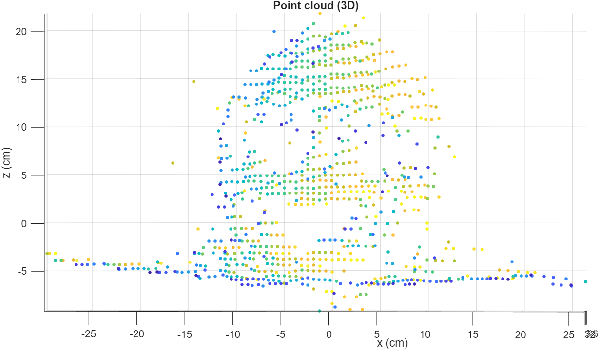
Next time, I'd keep the table out of the scan, use smaller pan and tilt steps for more detail, stabilize the sensor to reduce rattling, and add a quick preliminary scan that finds the object so the full scan only covers the angles that matter.